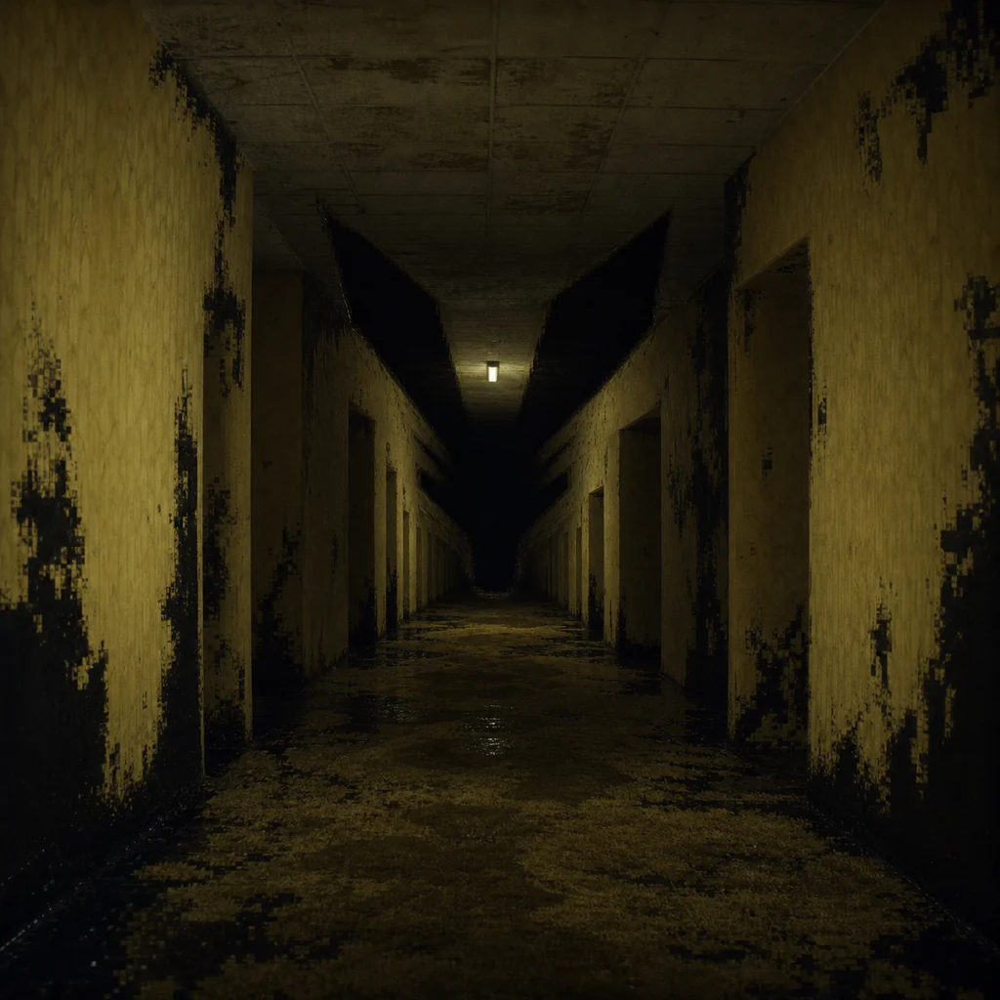

Dead Air

At zero, the hum stops sounding electrical. It sounds like your name spoken through carpet fibers. The walls do not close in. They become certain that they were always your walls.
Somewhere behind the wallpaper, the recovered echoes keep transmitting. They cannot pull you out from this side, but they have preserved one small refusal: the maze does not get to call this surrender.
ENDING 0: FALSE FLOOR
A run can fail without becoming meaningless. Begin again with a fresh foxprint. Move faster, use the bottle deliberately, and remember that the terminal only lends its breathing protocol twice.